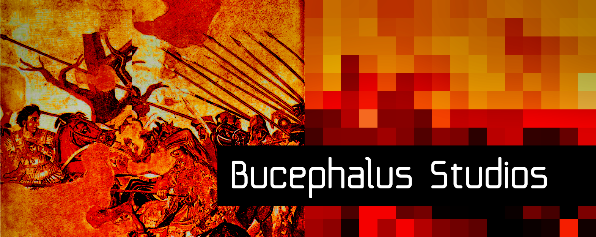
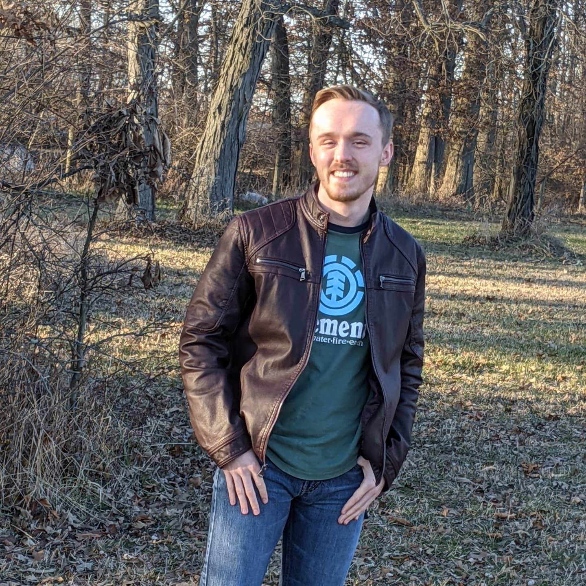
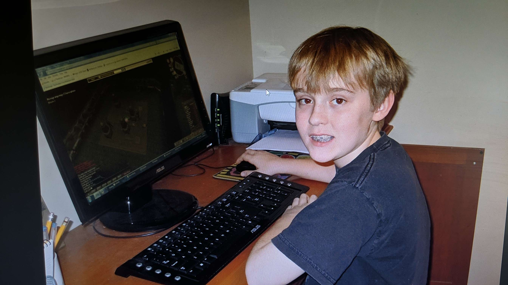

About Bucephalus Studios

Bucephalus Studios LLC is a sole-proprietor software company founded in 2021 by Jeff Stevens. We are dedicated
toward making interesting, original games that are not plagued by the problems of modern triple-A games like corporatized design,
predatory monetization, and bad player-developer relationships.
We are inspired by the quality of masterpieces like Chrono Trigger and the insanity of esoteric titles like Liberal Crime Squad,
and hope to combine these virtues to create games that you can make a core part of your identity.
We are also a supporter of free open-source software. Check out our software page to see our programs you can
download for free!
About Jeff Stevens

For my professional profile and history, please see
my linkedin.
Hi, I'm Jeff Stevens, and this was me as a wee lad.

I'm in my 20s now, and these memories of meeting up with my lunchtable friends in MMORPGs, braving the wild-west
of early internet forums and image boards, and playing every flash game I could find on Newgrounds made me the game
developer I am today.
I always had a yearning to bring my imaginations to life through playing make-believe and drawing comics, and I became
aware of computers and their ability to actualize my imaginations from a young age. I created little games in the Scratch programming
language during elementary school, and during high school my family supported my heavy involvement in an FRC robotics team.
I went on to major in computer science at Denison University and started making CultGame after I took a class about cults
in the religion department.
Nowadays, I work from home doing business as Bucephalus Studios designing games, writing code, and doing the
mish-mash of other tasks that comes with pulling a game into the world kicking and screaming. Outside of work
you'll find me doing olympic saber fencing, watching horror movies, or cooking up some tikka masala in my kitchen.